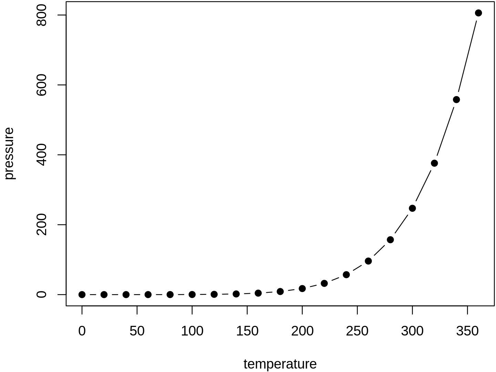

Chapter 2 Introduction
2.1 Terminology
The following terms come up repeatedly in discussion of machine learning(Google 2018):
- Instance: The thing about which you want to make a prediction. For example, the instance might be a web page that you want to classify as either “about cats” or “not about cats”.
- Label: An answer for a prediction task; either the answer produced by a machine learning system, or the right answer supplied in training data. For example, the label for a web page might be “about cats”.
- Feature: A property of an instance used in a prediction task. For example, a web page might have a feature “contains the word ‘cat’”.
- Feature Column: A set of related features, such as the set of all possible countries in which users might live. An example may have one or more features present in a feature column. “Feature column” is Google-specific terminology. A feature column is referred to as a “namespace” in the VW system (at Yahoo/Microsoft), or a field. Example: An instance (with its features) and a label.
- Model: A statistical representation of a prediction task. You train a model on examples then use the model to make predictions.
- Metric: A number that you care about. May or may not be directly optimized.
- Objective: A metric that your algorithm is trying to optimize.
- Pipeline: The infrastructure surrounding a machine learning algorithm. Includes gathering the data from the front end, putting it into training data files, training one or more models, and exporting the models to production.
2.2 Useful Materials
2.3 Prerequisites
2.4 Example
You can label chapter and section titles using {#label} after them, e.g., we can reference Chapter 2. If you do not manually label them, there will be automatic labels anyway, e.g., Chapter 4.
Figures and tables with captions will be placed in figure and table environments, respectively.

Figure 2.1: Here is a nice figure!
Reference a figure by its code chunk label with the fig: prefix, e.g., see Figure 2.1. Similarly, you can reference tables generated from knitr::kable(), e.g., see Table 2.1.
| Sepal.Length | Sepal.Width | Petal.Length | Petal.Width | Species |
|---|---|---|---|---|
| 5.1 | 3.5 | 1.4 | 0.2 | setosa |
| 4.9 | 3.0 | 1.4 | 0.2 | setosa |
| 4.7 | 3.2 | 1.3 | 0.2 | setosa |
| 4.6 | 3.1 | 1.5 | 0.2 | setosa |
| 5.0 | 3.6 | 1.4 | 0.2 | setosa |
| 5.4 | 3.9 | 1.7 | 0.4 | setosa |
| 4.6 | 3.4 | 1.4 | 0.3 | setosa |
| 5.0 | 3.4 | 1.5 | 0.2 | setosa |
| 4.4 | 2.9 | 1.4 | 0.2 | setosa |
| 4.9 | 3.1 | 1.5 | 0.1 | setosa |
| 5.4 | 3.7 | 1.5 | 0.2 | setosa |
| 4.8 | 3.4 | 1.6 | 0.2 | setosa |
| 4.8 | 3.0 | 1.4 | 0.1 | setosa |
| 4.3 | 3.0 | 1.1 | 0.1 | setosa |
| 5.8 | 4.0 | 1.2 | 0.2 | setosa |
| 5.7 | 4.4 | 1.5 | 0.4 | setosa |
| 5.4 | 3.9 | 1.3 | 0.4 | setosa |
| 5.1 | 3.5 | 1.4 | 0.3 | setosa |
| 5.7 | 3.8 | 1.7 | 0.3 | setosa |
| 5.1 | 3.8 | 1.5 | 0.3 | setosa |
References
Google. 2018. “Rules of Machine Learning.” https://developers.google.com/machine-learning/guides/rules-of-ml.